Egypt Trav-E-Log ©
Mosques and Minarets
Nov 7, 2010, Giza, Egypt
-------------------------------------------
Cairo, "the city skyline with a thousnd minarets" may be an exageration, but the minarets do add to the character. Thin ones, fat ones, round, square, solid, ventilated, pointed, spiraled, domed, parapeted - some even notched. This skyline has them all. Maybe someone will write a special topic on "Minarets of Cairo"?
-------------------------------------------
Never was good with names, and with so many mosques in Cairo, who can remember them all? But taking photos on a clear day is always fun.
The Arabic script on parapet above doorway says "Allah".
The top two photos below show the oldest two surviving minarets in Cairo -- on the outer walls of Al-Hakim Mosque.
|  |
| 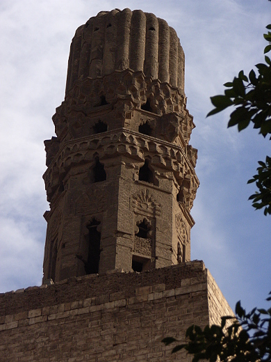 |
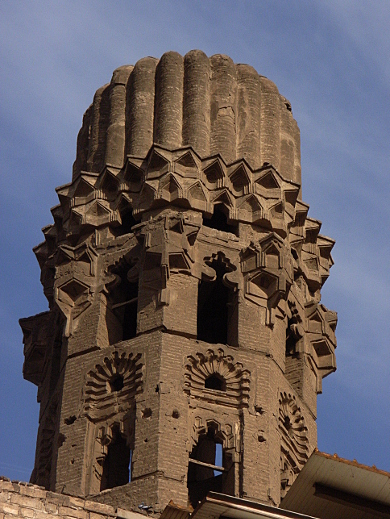 |
| 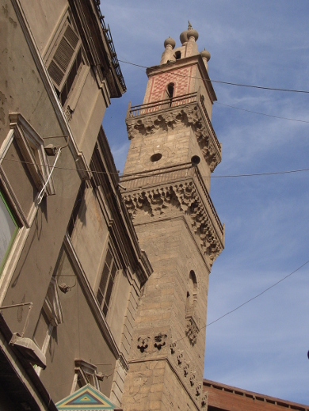 |
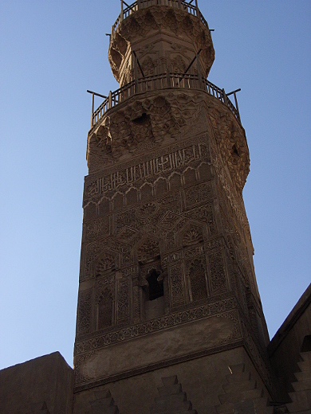 |
| 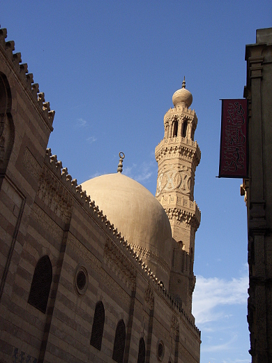 |
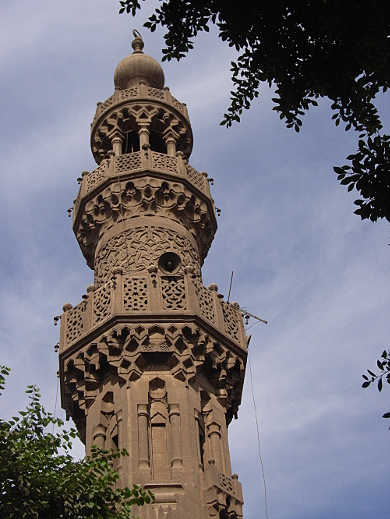 |
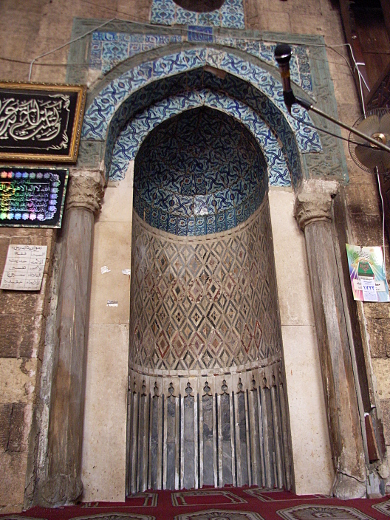
Tiled Vault |
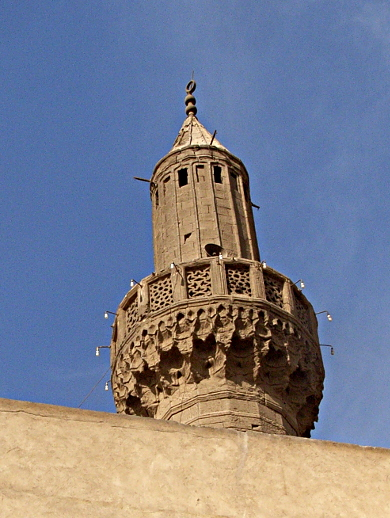 |
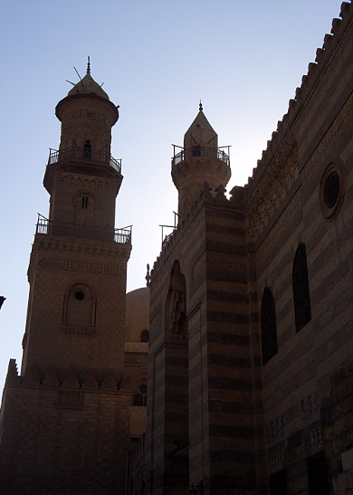
|
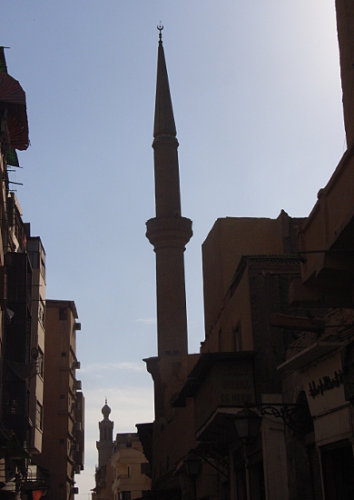 |
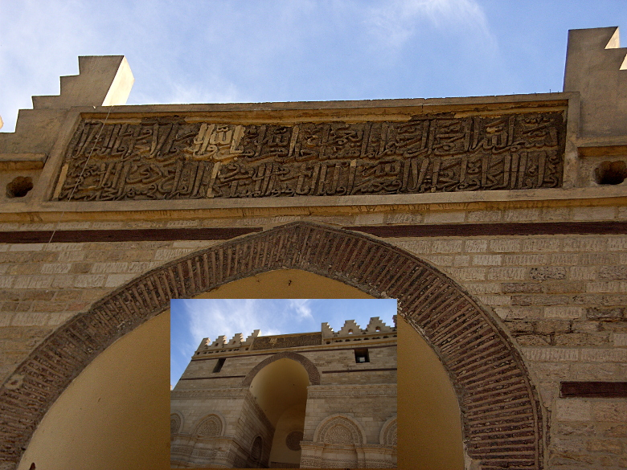
Composite showing Lintel inscription on El Hakim Mosque entrance. |